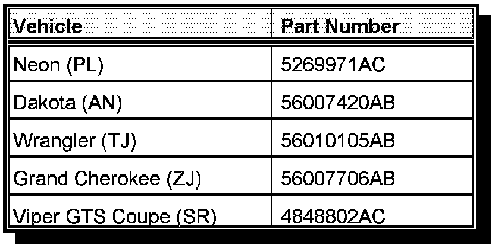

Recall - Airbag Control Module: Overview
No. 731July, 1997
To: All Dealers
Subject:
Safety Recall # 731 -- Airbag Control Module
Models:
^ 1997 Model Year Dodge and Plymouth Neon (PL) Vehicles Built at the Belvidere Assembly Plant ("D" in the 11th VIN Position) Through September 3, 1996 (MDH 090317)
^ 1997 Model Year Dodge and Plymouth Neon (PL) Vehicles Built at the Toluca Assembly Plant ("T" in the 11th VIN Position) Through September 9, 1996 (MDH 090906)
^ 1997 Model Year Dodge Dakota (AN) Vehicles Built Through September 5, 1996 (MDH 090521)
^ 1997 Model Year Jeep Wrangler (TJ) Vehicles Built Through September 3, 1996 (MDH 090319)
^ 1997 Model Year Jeep Grand Cherokee (ZJ) Vehicles Built Through September 3, 1996 (MDH 090312)
^ 1996 Model Year Dodge Viper GTS Coupe (SR) Vehicles Built Through September 30, 1996 (MDH 093014)
The airbags on the above listed vehicles, may inadvertently deploy during a three (3) second period after the ignition key has been turned to the off position, which could injure a vehicle occupant. To correct this condition, the airbag control module (ACM) must be replaced.
IMPORTANT:
Some of the involved vehicles may be in dealer new vehicle inventory. Federal law requires you to complete this recall service on these vehicles before retail delivery. Dealers should also consider this requirement to apply to used vehicle inventory, and should perform this recall on vehicles in for service as determined by using DIAL System Function 70.
Details of this service action are explained in the following sections.
Service Procedure Videotape
No videotape of the service procedure for this recall will be provided.
Dealer Notification & Vehicle List
All dealers will receive a copy of this dealer recall notification letter by first class mail. Each dealer to whom involved vehicles were invoiced (or the current dealer at the same street address) will receive a list of their involved vehicles. The Vehicle List is arranged in Vehicle Identification Number (VIN) sequence. Owners known to Chrysler are also listed. The lists are for dealer reference in arranging for service of involved vehicles.
DIAL System Functions 53, 70 and VIP
All involved vehicles will be entered to DIAL System Functions 53, 70 and VIP at the time of recall implementation for dealer inquiry as needed.
Parts
Important:
A quantity of parts will be distributed initially and billed to all involved dealers. This quantity will cover a portion of the total vehicles involved. Additional parts may be ordered as needed to support customer demand.

Each involved dealer, to whom vehicles in the recall were invoiced (or the current dealer at the same street address), will receive enough of each ACM Package to service about 25% of those vehicles. Each package contains one (1) ACM. Refer to the table above for the appropriate package application:
Owner Notification and Service Scheduling
All involved vehicle owners known to Chrysler are being notified of the service requirement by first class mail. They are requested to schedule appointments for the service with their dealers. A copy of the owner notification letter is included.
Enclosed with each owner notification is an Owner Notification Form. The involved vehicle and recall are identified on the form for owner or dealer reference as needed.